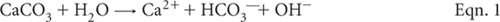
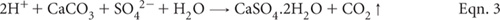

Neutralisation reactions of agricultural limestone [calcium carbonate (CaCO3)], in acidic soils are complex, but rely on the hydrolysis of sparingly soluble CaCO3, involving one or more chemical reactions.

In tropical soils containing reactive colloids of Al, neutralisation with limestone can be considered as undergoing the following reaction:
In the special case of acid sulfate soils, the neutralisation reaction with agricultural limestone (or equivalent) includes:

Although these reactions can operate concurrently and are reversible, reversibility is unlikely to be significant in strongly acidic soils found across vast areas of Australasia, particularly those that are highly weathered and/or occur in humid regions.
If the reactions shown in Eqn. 2 and Eqn. 3 go forward to completion, one mole of CaCO3 will produce one mole of CO2. That is, one tonne of CaCO3 has the potential to produce ≈0.44 tonne of CO2, equivalent to 0.12 tonnes C as CO2. It follows that liming of soil should be undertaken wisely, in order to achieve the desired neutralisation at minimum cost and with minimum production of CO2, which is a greenhouse gas if the CO2 formed reaches the atmosphere.
Sims (1996) defined lime requirement as the amount of agricultural limestone or other basic material needed to increase the pH of the soil from an unacceptably acidic condition to a value that is considered optimum for the desired use of the soil. McLean (1982) also referred to it as the capacity factor of soil acidity, since it equates to the fraction of soil acidity that must be neutralised to achieve a desired soil pH.
Measurement of soil pH can quickly indicate if a soil is acidic but pH alone is a poor indicator of a soil’s lime requirement (LR). Accordingly, more reliable laboratory procedures for determining the LR of soils have been sought. Many of the more successful chemical approaches and procedures have been discussed by McLean (1982) and Alley and Zelazny (1987). Sims (1996) discussed a range of analytical factors that need to be considered when selecting and using LR tests.
Table 16.1. Summary details of method codes, method titles, technologies and expected reliability of tests for lime requirements described in this chapter.
Code |
Technology |
Test method |
Notes |
16A1 |
Calculation, using exch. Al3+. |
Calculated lime rate – from exch. Al3+. |
Useful test where acid soil infertility is due primarily to exch. Al3+. Lime rates obtained are often lower than those obtained by Method 16D1. |
16B1 |
Calculation based on exch. Al3+ and ECEC. |
Calculated lime rate – Cregan. |
Useful test where acid soil infertility is due primarily to exch. Al3+ and crop tolerance to small amounts of soil Al is understood. |
16C1 |
Mehlich buffer solution used to estimate buffer soil acidity for mineral soils. |
Lime requirement – Mehlich single buffer. |
Quick test dependent on existence of robust field-derived correlations between Mehlich soil-buffer pH and the amount of limestone required to reach a specified soil pH, typically 5.5 or 6.5. |
16D1 |
Four day equilibration of air-dry soil with graded concentrations of Ca(OH)2. |
Lime requirement – Dunn titration curves. |
A slow-to-perform, classical laboratory procedure, mostly limited to research projects. |
Laboratory methods typically commence with air-dry soils of <2 mm. This can be justified provided care is taken when sampling, during transport to the laboratory, and in the process of sample preparation. These key steps must be undertaken in a manner that minimises the likelihood of chemical changes, such as the oxidation of pyritic minerals. More details on handling soils containing sulfides are provided in Chapter 20.
Four optional procedures for lime requirements were provided by Rayment and Higginson (1992). These are included and updated in this chapter (see Table 16.1). Two use exchangeable Al3+ as a LR index. The third is based on a single-buffer soil equilibration, while the fourth relies on equilibration of soil with graded amounts of calcium hydroxide [Ca(OH)2] and subsequent measurement of pH in the aqueous soil suspension. See preambles for individual methods for more details on each. Chapter 20 includes field and laboratory procedures for neutralising the actual and potential acidity associated with ASS.